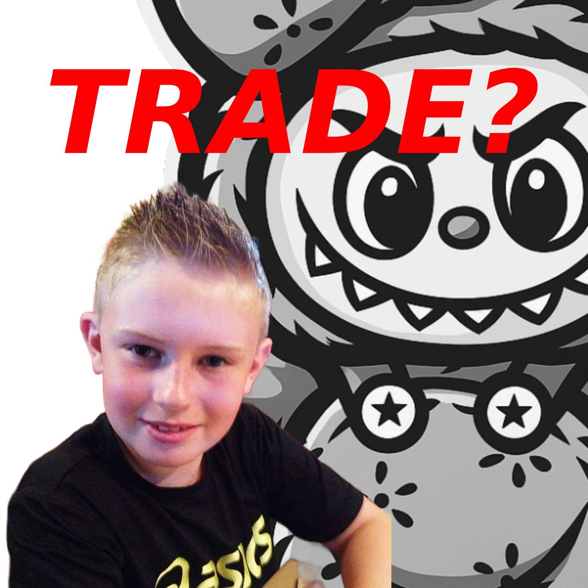

Season 1 Comes to a Close!
The Season 1 playoffs came to an electrifying finish this week, showcasing intense matchups and top-tier competition. In Round 1, Balls Deep dominated Labubu Ladies with a convincing 2-0 series win, advancing to the semi-finals. The Semi-Finals saw two thrilling series. Balls Deep faced off against 2 Girls, 1 Cup, with the latter narrowly claiming victory 2-1 to earn a spot in the finals. On the other side, Short Stacks overcame Fent Fellas 2-1, setting up a highly anticipated championship matchup. In the Final, 2 Girls, 1 Cup proved unstoppable, sweeping Short Stacks 3-0 to capture the Season 1 playoff title. Fans were treated to standout performances and clutch plays, cementing 2 Girls, 1 Cup as the team to beat this season. Stay tuned for coverage of the upcoming draft and next season’s exciting schedule!
View ResultsSeason 1 Playoffs!
The stage is set for the highly anticipated Season 1 Playoffs! As teams gear up for the ultimate showdown, fans are left wondering who will emerge victorious. Stay tuned for all the action!
View BracketRegan Staying with Fent Fallas — Tampering Fallout Ends Labubu Ladies Drama

The League has officially closed the book on one of the most chaotic sagas in recent memory: Regan will not be traded to the Labubu Ladies and remains fully committed to his current squad, Fent Fallas, alongside longtime teammate and co-captain Roy.
BSNL officals have released the following statement: "The BSNL Beer Pong League has completed its review of recent allegations concerning potential tampering by the Labubu Ladies in relation to a possible trade involving player Regan from the Fent Fellas. After careful investigation, the League has determined that Labubu Ladies’ captain, Makayla, engaged in discussions with Regan outside the scope permitted by our official trade and player movement guidelines. These actions constitute a violation of the BSNL’s tampering policy, which exists to ensure fair play, competitive balance, and respect between teams. As a result of this finding: The proposed trade between the Fent Fellas and the Labubu Ladies for Regan will not proceed. The Labubu Ladies organization has been formally reprimanded and will face additional internal review by the League’s Disciplinary Committee. The League will be revisiting and, if necessary, updating its tampering policies to ensure clarity and prevent similar incidents in the future. We emphasize our commitment to upholding integrity and fairness across all league activities. The BSNL Beer Pong League thanks all teams and fans for their patience and support as we work to maintain a competitive and respectful environment for everyone involved. For further questions, please contact the BSNL League Office"
Regan broke his silence this afternoon, telling reporters: “I’m locked in with Fent Fallas. Roy and I have built something real. We’re not just teammates—we’re a dynasty in motion. I’m not going anywhere.”
Labubu Ladies’ captain, Makayla, released her own response: "I am both frustrated and extremely disappointed by the BSNL Beer Pong League's recent statement regarding the investigation into the alleged "tampering" with Regan from the Fent Fellas. Let me be crystal clear—I did NOT engage in any inappropriate discussions or actions to circumvent the league's official guidelines. The League’s decision to label my interactions as "tampering" is not only unfair but also reeks of an overreaction. I’ve always operated within the spirit of competition and respect for the game, and I resent the suggestion that I would intentionally break the rules or compromise the integrity of the BSNL. This is not just an attack on me personally, but on my entire team. To make matters worse, the League has effectively voided a perfectly legitimate trade, punishing us for something that, frankly, was blown out of proportion. There was no deliberate attempt to circumvent any rules, yet now we face the consequences of a decision that was made without a clear understanding of the situation. If the League believes that a simple conversation about a potential trade should be classified as “tampering,” then they need to reconsider what constitutes a violation. We’ve always worked hard to build our team through fair means, and we will not be dragged through the mud based on unfounded assumptions. I expect a full review of this so-called “investigation” and a retraction of this punishment. The Labubu Ladies deserve more than this. We will continue to fight for fairness, and if necessary, we will take further action."
July Game Day Poll
We’re excited to announce the July Game Day poll.
Vote in the PollBehind the Scenes: Draft & Game Day Results
The inaugural draft saw intense moments as teams picked their top choices.
1st - 2 Girls, 1 Cup selects Shawna
2nd - Short Stacks select Toby
3rd - Fent Fellas select Roy
4th - Balls Deep selects Abby
5th - Labubu Ladies select Zoe
The results of the draft and June Game Day are now live!
League Rules: Play Hard, Play Fair
Understanding the rules is key to fair play and fun. Dive into the league rulebook and get familiar with every nuance.
View Rulebook"Respect thy table, fear not the rebuttal, and let every shot be taken in truth and confidence."